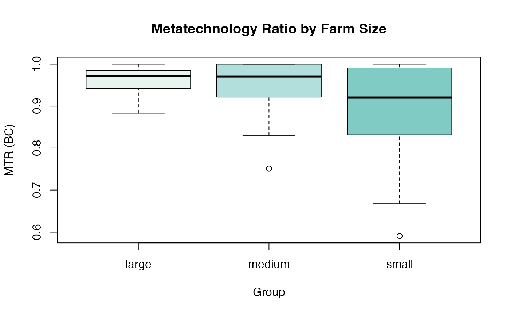
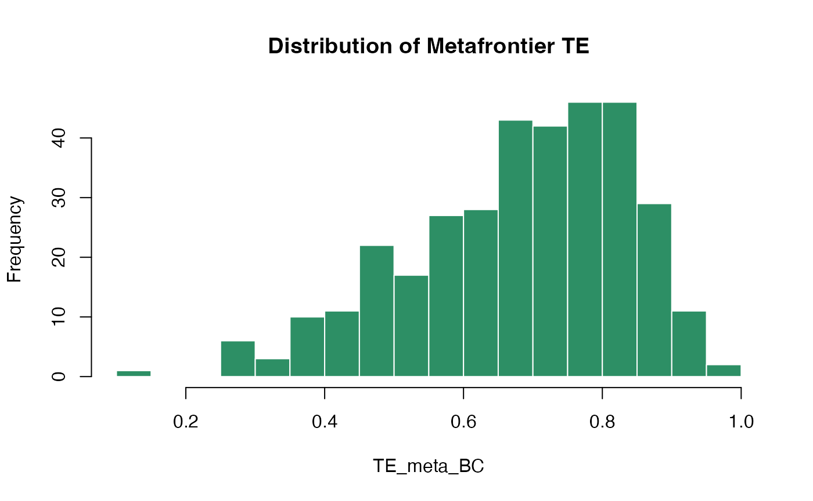

Extracting Efficiencies and MTRs
Source:vignettes/efficiency-extraction.Rmd
efficiency-extraction.RmdOverview
Once a metafrontier model has been fitted, a range of S3
methods are available to extract and inspect results. This vignette
demonstrates all of them using a simple sfacross + LP
example.
Setup: Fit a Model
library(smfa)
#> Loading required package: sfaR
#> **** *******
#> /**/ /**////**
#> ****** ****** ****** /** /**
#> **//// ///**/ //////** /*******
#> //***** /** ******* /**///**
#> /////** /** **////** /** //**
#> ****** /** //********/** //**
#> ////// // //////// // // version 1.0.1
#>
#> * Please cite the 'sfaR' package as:
#> Dakpo KH., Desjeux Y., Henningsen A., and Latruffe L. (2024). sfaR: Stochastic Frontier Analysis Using R. R package version 1.0.1.
#>
#> See also: citation("sfaR")
#>
#> * For any questions, suggestions, or comments on the 'sfaR' package, you can contact directly the authors or visit: https://github.com/hdakpo/sfaR/issues
#> . .o88o.
#> .o8 888 `"
#> ooo. .oo. .oo. .ooooo. .o888oo .oooo. o888oo oooo d8b .ooooo. oo
#> `888P"Y88bP"Y88b d88' `88b 888 `P )88b 888 `888""8P d88' `88b `8
#> 888 888 888 888ooo888 888 .oP"888 888 888 888 888 8
#> 888 888 888 888 .o 888 . d8( 888 888 888 888 888 8
#> o888o o888o o888o `Y8bod8P' "888" `Y888""8o o888o d888b `Y8 88 88 88
#> version 1.0.0
#>
#> * Please cite the 'smfa' package as:
#> Owili, SO. (2026). smfa: Metafrontier Analysis in R. R package version 1.0.0.
#>
#> See also: citation("smfa")
#>
#> * For any questions, suggestions, or comments on the 'smfa' package, you can contact the authors directly or visit:
#> https://github.com/SulmanOlieko/smfa/issues
data("ricephil", package = "sfaR")
ricephil$group <- cut(
ricephil$AREA,
breaks = quantile(ricephil$AREA, probs = c(0, 1/3, 2/3, 1), na.rm = TRUE),
labels = c("small", "medium", "large"),
include.lowest = TRUE
)
meta_lp <- smfa(
formula = log(PROD) ~ log(AREA) + log(LABOR) + log(NPK),
data = ricephil,
group = "group",
S = 1,
udist = "hnormal",
groupType = "sfacross",
metaMethod = "lp"
)
summary() — Full Model Summary
Prints the complete model output including group-specific SFA results, metafrontier coefficients (if available), and efficiency statistics by group.
summary(meta_lp)
#> ============================================================
#> Stochastic Metafrontier Analysis
#> Metafrontier method: Linear Programming (LP) Metafrontier
#> Stochastic Production/Profit Frontier, e = v - u
#> Group approach : Stochastic Frontier Analysis
#> Group estimator : sfacross
#> Group optim solver : BFGS maximization
#> Groups ( 3 ): small, medium, large
#> Total observations : 344
#> Distribution : hnormal
#> ============================================================
#>
#> ------------------------------------------------------------
#> Group: small (N = 125) Log-likelihood: -50.98578
#> ------------------------------------------------------------
#> --------------------------------------------------------------------------------
#> Normal-Half Normal SF Model
#> Dependent Variable: log(PROD)
#> Log likelihood solver: BFGS maximization
#> Log likelihood iter: 42
#> Log likelihood value: -50.98578
#> Log likelihood gradient norm: 9.40653e-06
#> Estimation based on: N = 125 and K = 6
#> Inf. Cr: AIC = 114.0 AIC/N = 0.912
#> BIC = 130.9 BIC/N = 1.048
#> HQIC = 120.9 HQIC/N = 0.967
#> --------------------------------------------------------------------------------
#> Variances: Sigma-squared(v) = 0.05318
#> Sigma(v) = 0.05318
#> Sigma-squared(u) = 0.23435
#> Sigma(u) = 0.23435
#> Sigma = Sqrt[(s^2(u)+s^2(v))] = 0.53622
#> Gamma = sigma(u)^2/sigma^2 = 0.81504
#> Lambda = sigma(u)/sigma(v) = 2.09921
#> Var[u]/{Var[u]+Var[v]} = 0.61558
#> --------------------------------------------------------------------------------
#> Average inefficiency E[ui] = 0.38626
#> Average efficiency E[exp(-ui)] = 0.70643
#> --------------------------------------------------------------------------------
#> Stochastic Production/Profit Frontier, e = v - u
#> -----[ Tests vs. No Inefficiency ]-----
#> Likelihood Ratio Test of Inefficiency
#> Deg. freedom for inefficiency model 1
#> Log Likelihood for OLS Log(H0) = -54.80277
#> LR statistic:
#> Chisq = 2*[LogL(H0)-LogL(H1)] = 7.63398
#> Kodde-Palm C*: 95%: 2.70554 99%: 5.41189
#> Coelli (1995) skewness test on OLS residuals
#> M3T: z = -3.57676
#> M3T: p.value = 0.00035
#> Final maximum likelihood estimates
#> --------------------------------------------------------------------------------
#> Deterministic Component of SFA
#> --------------------------------------------------------------------------------
#> Coefficient Std. Error z value Pr(>|z|)
#> (Intercept) -1.58745 0.51274 -3.0960 0.001962 **
#> log(AREA) 0.24014 0.11834 2.0292 0.042440 *
#> log(LABOR) 0.43464 0.12292 3.5361 0.000406 ***
#> log(NPK) 0.30516 0.05701 5.3523 8.682e-08 ***
#> --------------------------------------------------------------------------------
#> Parameter in variance of u (one-sided error)
#> --------------------------------------------------------------------------------
#> Coefficient Std. Error z value Pr(>|z|)
#> Zu_(Intercept) -1.45093 0.29867 -4.858 1.186e-06 ***
#> --------------------------------------------------------------------------------
#> Parameters in variance of v (two-sided error)
#> --------------------------------------------------------------------------------
#> Coefficient Std. Error z value Pr(>|z|)
#> Zv_(Intercept) -2.93406 0.35401 -8.288 < 2.2e-16 ***
#> ---
#> Signif. codes: 0 '***' 0.001 '**' 0.01 '*' 0.05 '.' 0.1 ' ' 1
#> --------------------------------------------------------------------------------
#> Model was estimated on : Apr Fri 24, 2026 at 15:49
#> Log likelihood status: successful convergence
#> --------------------------------------------------------------------------------
#>
#> ------------------------------------------------------------
#> Group: medium (N = 104) Log-likelihood: -15.28164
#> ------------------------------------------------------------
#> --------------------------------------------------------------------------------
#> Normal-Half Normal SF Model
#> Dependent Variable: log(PROD)
#> Log likelihood solver: BFGS maximization
#> Log likelihood iter: 41
#> Log likelihood value: -15.28164
#> Log likelihood gradient norm: 3.83566e-05
#> Estimation based on: N = 104 and K = 6
#> Inf. Cr: AIC = 42.6 AIC/N = 0.409
#> BIC = 58.4 BIC/N = 0.562
#> HQIC = 49.0 HQIC/N = 0.471
#> --------------------------------------------------------------------------------
#> Variances: Sigma-squared(v) = 0.01058
#> Sigma(v) = 0.01058
#> Sigma-squared(u) = 0.22010
#> Sigma(u) = 0.22010
#> Sigma = Sqrt[(s^2(u)+s^2(v))] = 0.48030
#> Gamma = sigma(u)^2/sigma^2 = 0.95412
#> Lambda = sigma(u)/sigma(v) = 4.56034
#> Var[u]/{Var[u]+Var[v]} = 0.88314
#> --------------------------------------------------------------------------------
#> Average inefficiency E[ui] = 0.37433
#> Average efficiency E[exp(-ui)] = 0.71330
#> --------------------------------------------------------------------------------
#> Stochastic Production/Profit Frontier, e = v - u
#> -----[ Tests vs. No Inefficiency ]-----
#> Likelihood Ratio Test of Inefficiency
#> Deg. freedom for inefficiency model 1
#> Log Likelihood for OLS Log(H0) = -21.11323
#> LR statistic:
#> Chisq = 2*[LogL(H0)-LogL(H1)] = 11.66318
#> Kodde-Palm C*: 95%: 2.70554 99%: 5.41189
#> Coelli (1995) skewness test on OLS residuals
#> M3T: z = -2.91021
#> M3T: p.value = 0.00361
#> Final maximum likelihood estimates
#> --------------------------------------------------------------------------------
#> Deterministic Component of SFA
#> --------------------------------------------------------------------------------
#> Coefficient Std. Error z value Pr(>|z|)
#> (Intercept) -0.08182 0.50668 -0.1615 0.8717190
#> log(AREA) 0.47410 0.13984 3.3903 0.0006981 ***
#> log(LABOR) 0.17935 0.10201 1.7581 0.0787310 .
#> log(NPK) 0.20255 0.08130 2.4913 0.0127289 *
#> --------------------------------------------------------------------------------
#> Parameter in variance of u (one-sided error)
#> --------------------------------------------------------------------------------
#> Coefficient Std. Error z value Pr(>|z|)
#> Zu_(Intercept) -1.51367 0.23549 -6.4276 1.296e-10 ***
#> --------------------------------------------------------------------------------
#> Parameters in variance of v (two-sided error)
#> --------------------------------------------------------------------------------
#> Coefficient Std. Error z value Pr(>|z|)
#> Zv_(Intercept) -4.54846 0.76429 -5.9512 2.661e-09 ***
#> ---
#> Signif. codes: 0 '***' 0.001 '**' 0.01 '*' 0.05 '.' 0.1 ' ' 1
#> --------------------------------------------------------------------------------
#> Model was estimated on : Apr Fri 24, 2026 at 15:49
#> Log likelihood status: successful convergence
#> --------------------------------------------------------------------------------
#>
#> ------------------------------------------------------------
#> Group: large (N = 115) Log-likelihood: -8.02197
#> ------------------------------------------------------------
#> --------------------------------------------------------------------------------
#> Normal-Half Normal SF Model
#> Dependent Variable: log(PROD)
#> Log likelihood solver: BFGS maximization
#> Log likelihood iter: 68
#> Log likelihood value: -8.02197
#> Log likelihood gradient norm: 4.01301e-05
#> Estimation based on: N = 115 and K = 6
#> Inf. Cr: AIC = 28.0 AIC/N = 0.244
#> BIC = 44.5 BIC/N = 0.387
#> HQIC = 34.7 HQIC/N = 0.302
#> --------------------------------------------------------------------------------
#> Variances: Sigma-squared(v) = 0.01399
#> Sigma(v) = 0.01399
#> Sigma-squared(u) = 0.16751
#> Sigma(u) = 0.16751
#> Sigma = Sqrt[(s^2(u)+s^2(v))] = 0.42602
#> Gamma = sigma(u)^2/sigma^2 = 0.92293
#> Lambda = sigma(u)/sigma(v) = 3.46063
#> Var[u]/{Var[u]+Var[v]} = 0.81315
#> --------------------------------------------------------------------------------
#> Average inefficiency E[ui] = 0.32656
#> Average efficiency E[exp(-ui)] = 0.74195
#> --------------------------------------------------------------------------------
#> Stochastic Production/Profit Frontier, e = v - u
#> -----[ Tests vs. No Inefficiency ]-----
#> Likelihood Ratio Test of Inefficiency
#> Deg. freedom for inefficiency model 1
#> Log Likelihood for OLS Log(H0) = -16.96836
#> LR statistic:
#> Chisq = 2*[LogL(H0)-LogL(H1)] = 17.89279
#> Kodde-Palm C*: 95%: 2.70554 99%: 5.41189
#> Coelli (1995) skewness test on OLS residuals
#> M3T: z = -4.12175
#> M3T: p.value = 0.00004
#> Final maximum likelihood estimates
#> --------------------------------------------------------------------------------
#> Deterministic Component of SFA
#> --------------------------------------------------------------------------------
#> Coefficient Std. Error z value Pr(>|z|)
#> (Intercept) -1.31194 0.41859 -3.1342 0.0017234 **
#> log(AREA) 0.38278 0.14297 2.6772 0.0074236 **
#> log(LABOR) 0.42105 0.10992 3.8303 0.0001280 ***
#> log(NPK) 0.23143 0.06065 3.8160 0.0001356 ***
#> --------------------------------------------------------------------------------
#> Parameter in variance of u (one-sided error)
#> --------------------------------------------------------------------------------
#> Coefficient Std. Error z value Pr(>|z|)
#> Zu_(Intercept) -1.78673 0.20176 -8.8555 < 2.2e-16 ***
#> --------------------------------------------------------------------------------
#> Parameters in variance of v (two-sided error)
#> --------------------------------------------------------------------------------
#> Coefficient Std. Error z value Pr(>|z|)
#> Zv_(Intercept) -4.26963 0.40584 -10.521 < 2.2e-16 ***
#> ---
#> Signif. codes: 0 '***' 0.001 '**' 0.01 '*' 0.05 '.' 0.1 ' ' 1
#> --------------------------------------------------------------------------------
#> Model was estimated on : Apr Fri 24, 2026 at 15:49
#> Log likelihood status: successful convergence
#> --------------------------------------------------------------------------------
#>
#> ------------------------------------------------------------
#> Metafrontier Coefficients (lp):
#> (LP: deterministic envelope - no estimated parameters)
#>
#> ------------------------------------------------------------
#> Efficiency Statistics (group means):
#> ------------------------------------------------------------
#> N_obs N_valid TE_group_BC TE_group_JLMS TE_meta_BC TE_meta_JLMS MTR_BC
#> small 125 125 0.71065 0.70090 0.64126 0.63244 0.89981
#> medium 104 104 0.71253 0.70965 0.68204 0.67929 0.95597
#> large 115 115 0.74772 0.74406 0.72186 0.71834 0.96521
#> MTR_JLMS
#> small 0.89981
#> medium 0.95597
#> large 0.96521
#>
#> Overall:
#> TE_group_BC=0.7236 TE_group_JLMS=0.7182
#> TE_meta_BC=0.6817 TE_meta_JLMS=0.6767
#> MTR_BC=0.9403 MTR_JLMS=0.9403
#> ------------------------------------------------------------
#> Total Log-likelihood: -74.28939
#> AIC: 184.5788 BIC: 253.7103 HQIC: 212.113
#> ------------------------------------------------------------
#> Model was estimated on : Apr Fri 24, 2026 at 15:49
efficiencies() — Firm-Level Efficiency and MTR
Scores
Returns a data frame with one row per observation containing all
efficiency estimates and metatechnology ratios. All estimators are
available for all groupType values, though the exact
columns vary slightly by model type.
eff <- efficiencies(meta_lp)
head(eff)
#> id group u_g TE_group_JLMS TE_group_BC TE_group_BC_reciprocal
#> 1 1 medium 0.2697165 0.7635959 0.7673345 1.316036
#> 2 2 large 0.3515642 0.7035867 0.7080897 1.430406
#> 3 3 large 0.2774565 0.7577085 0.7623358 1.327899
#> 4 4 medium 0.1710417 0.8427864 0.8461331 1.191355
#> 5 5 large 0.2119629 0.8089947 0.8133556 1.242901
#> 6 6 small 0.1987499 0.8197549 0.8275685 1.232467
#> uLB_g uUB_g m_g TE_group_mode teBCLB_g teBCUB_g u_meta
#> 1 0.077581942 0.4657010 0.26858570 0.7644599 0.6276949 0.9253512 0.3944439
#> 2 0.130356248 0.5739174 0.35118207 0.7038556 0.5633144 0.8777827 0.3779836
#> 3 0.065447909 0.4980807 0.27501606 0.7595599 0.6076959 0.9366478 0.3049531
#> 4 0.018022507 0.3583190 0.15885675 0.8531186 0.6988501 0.9821389 0.1710417
#> 5 0.027125654 0.4268531 0.20231520 0.8168374 0.6525594 0.9732389 0.2379271
#> 6 0.009050601 0.5251973 0.07998025 0.9231346 0.5914386 0.9909902 0.3295263
#> TE_meta_JLMS TE_meta_BC MTR_JLMS MTR_BC
#> 1 0.6740548 0.6773549 0.8827375 0.8827375
#> 2 0.6852418 0.6896274 0.9739266 0.9739266
#> 3 0.7371580 0.7416598 0.9728780 0.9728780
#> 4 0.8427864 0.8461331 1.0000000 1.0000000
#> 5 0.7882601 0.7925093 0.9743700 0.9743700
#> 6 0.7192644 0.7261201 0.8774139 0.8774139Column Reference
| Column | sfacross |
sfalcmcross |
sfaselectioncross |
|---|---|---|---|
id |
✓ | ✓ | ✓ |
group / Group_c
|
✓ | ✓ | ✓ |
u_g |
✓ | ✓ | ✓ |
TE_group_JLMS |
✓ | ✓ | ✓ |
TE_group_BC |
✓ | ✓ | ✓ |
TE_group_BC_reciprocal |
✓ | ✓ | ✓ |
uLB_g, uUB_g
|
✓ | — | — |
m_g, TE_group_mode
|
✓ | — | — |
PosteriorProb_c, PosteriorProb_c1 … |
— | ✓ | — |
u_meta |
✓ | ✓ | ✓ |
TE_meta_JLMS |
✓ | ✓ | ✓ |
TE_meta_BC |
✓ | ✓ | ✓ |
MTR_JLMS |
✓ | ✓ | ✓ |
MTR_BC |
✓ | ✓ | ✓ |
Subsetting by Group
# All small farms
eff_small <- eff[eff$group == "small", ]
# Descriptive statistics
summary(eff_small[, c("TE_group_BC", "TE_meta_BC", "MTR_BC")])
#> TE_group_BC TE_meta_BC MTR_BC
#> Min. :0.1737 Min. :0.1179 Min. :0.5907
#> 1st Qu.:0.6217 1st Qu.:0.5678 1st Qu.:0.8313
#> Median :0.7427 Median :0.6683 Median :0.9204
#> Mean :0.7107 Mean :0.6413 Mean :0.8998
#> 3rd Qu.:0.8165 3rd Qu.:0.7509 3rd Qu.:0.9908
#> Max. :0.9275 Max. :0.8774 Max. :1.0000
# Group-level means
aggregate(cbind(TE_group_BC, TE_meta_BC, MTR_BC) ~ group, data = eff, FUN = mean)
#> group TE_group_BC TE_meta_BC MTR_BC
#> 1 large 0.7477151 0.7218649 0.9652091
#> 2 medium 0.7125305 0.6820435 0.9559674
#> 3 small 0.7106507 0.6412620 0.8998140Visualising the Distribution
# MTR distribution by group (base R)
boxplot(MTR_BC ~ group, data = eff,
main = "Metatechnology Ratio by Farm Size",
xlab = "Group", ylab = "MTR (BC)",
col = c("#e8f5ef", "#b2dfdb", "#80cbc4"))
# Histogram of TE_meta_BC
hist(eff$TE_meta_BC, breaks = 30,
main = "Distribution of Metafrontier TE",
xlab = "TE_meta_BC", col = "#2d8f65", border = "white")
coef() — Estimated Coefficients
Returns the metafrontier coefficient vector (for QP and SFA methods;
NULL for LP).
# First fit a QP model
meta_qp <- smfa(
formula = log(PROD) ~ log(AREA) + log(LABOR) + log(NPK),
data = ricephil, group = "group", S = 1, udist = "hnormal",
groupType = "sfacross", metaMethod = "qp"
)
coef(meta_qp)
#> (Intercept) log(AREA) log(LABOR) log(NPK)
#> -0.6117795 0.3937843 0.2791273 0.2409454
vcov() — Variance-Covariance Matrix
Returns the variance-covariance matrix of the metafrontier coefficients (for models that estimate metafrontier parameters).
vcov(meta_qp)
#> (Intercept) `log(AREA)` `log(LABOR)` `log(NPK)`
#> (Intercept) 8.514304e-04 1.954064e-04 -1.729963e-04 -3.730091e-05
#> `log(AREA)` 1.954064e-04 5.359537e-05 -3.976453e-05 -9.599635e-06
#> `log(LABOR)` -1.729963e-04 -3.976453e-05 5.962116e-05 -1.454127e-05
#> `log(NPK)` -3.730091e-05 -9.599635e-06 -1.454127e-05 2.194543e-05
logLik() — Log-Likelihood
Returns the total log-likelihood value of the model (sum of group-level log-likelihoods plus the metafrontier log-likelihood where applicable).
logLik(meta_lp)
#> 'log Lik.' -74.28939 (df=18)
ic() — Information Criteria
Returns all three information criteria: AIC, BIC, and HQIC.
ic(meta_lp)
#> AIC BIC HQIC
#> 1 184.5788 253.7103 212.113
#> AIC BIC HQIC
#> 1 184.579 253.710 212.113
nobs() — Number of Observations
nobs(meta_lp) # Total observations across all groups
#> [1] 344
residuals() — Residuals
Returns the composite error residuals from the group-level stochastic frontier models.
Comparing Multiple Models
You can compare information criteria across methods to select the best model:
meta_lp <- smfa(log(PROD) ~ log(AREA) + log(LABOR) + log(NPK),
data = ricephil, group = "group", S = 1,
udist = "hnormal", groupType = "sfacross",
metaMethod = "lp")
meta_qp <- smfa(log(PROD) ~ log(AREA) + log(LABOR) + log(NPK),
data = ricephil, group = "group", S = 1,
udist = "hnormal", groupType = "sfacross",
metaMethod = "qp")
meta_huang <- smfa(log(PROD) ~ log(AREA) + log(LABOR) + log(NPK),
data = ricephil, group = "group", S = 1,
udist = "hnormal", groupType = "sfacross",
metaMethod = "sfa", sfaApproach = "huang")
#> Warning: The residuals of the OLS are right-skewed. This may indicate the absence of inefficiency or
#> model misspecification or sample 'bad luck'
# Combined information criteria table
models <- list(LP = meta_lp, QP = meta_qp, Huang = meta_huang)
do.call(rbind, lapply(names(models), function(nm) {
ic_vals <- ic(models[[nm]])
data.frame(Model = nm, AIC = ic_vals[["AIC"]],
BIC = ic_vals[["BIC"]], HQIC = ic_vals[["HQIC"]])
}))
#> Model AIC BIC HQIC
#> 1 LP 184.5788 253.7103 212.1130
#> 2 QP 192.5788 277.0729 226.2318
#> 3 Huang -910.1260 -817.9506 -873.4137